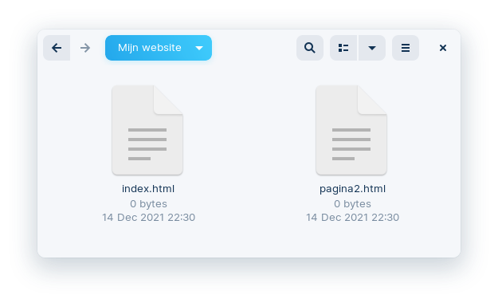

<!doctype html>
<html lang="en">
  <head>
    <meta charset="UTF-8" />
    <meta name="viewport" content="width=device-width, initial-scale=1.0" />

    <link href="../../assets/css/styles.css" rel="stylesheet" />
    <link
      rel="icon"
      href="../../assets/images/favicon-prod.ico"
    />

    <title>Meerdere Paginas</title>

    <!-- apply custom CSS to some page -->
    

    <!-- highlight.js -->
    <link
      rel="stylesheet"
      href="https://cdnjs.cloudflare.com/ajax/libs/highlight.js/11.9.0/styles/atom-one-dark.min.css"
    />
  </head>

  <body>
    <section class="mainSection">
      <div class="sectionContent">
        <!-- ------- -->
        <!-- SIDEBAR -->
        <!-- ------- -->

        <!-- breadcrumbs: not on homepage -->
        
        <nav class="breadcrumbs">
          <a href="../../index.html">⌂</a>

          <!-- only show link to section when not on a section page -->
          
          <span class="navDivider">/</span>
          
          <!-- current_path_parts splits the page.url by '/' to get individual parts of the URL -->
          
          <!-- section_name retrieves the word that comes after 'content' by accessing the second element in the current_path_parts array -->
          <a href="index.html"
            >Webtechnology</a
          >
          
        </nav>
        

        <!-- table of contents -->
        <!-- <nav>
            <div class="tocHeader">Inhoudstafel</div>
            <div id="toc" class="toc"></div>
            </nav> -->

        <!-- ------- -->
        <!-- CONTENT -->
        <!-- ------- -->

        <!-- header -->
        <header data-aos="fade-left">Meerdere Paginas</header>

        <!-- content -->
        <h1 id="link-naar-een-andere-website">Link naar een andere website</h1>

<p>Zo maak je een link naar een andere website:</p>

<div class="language-html highlighter-rouge"><div class="highlight"><pre class="highlight"><code>Een link naar de <span class="nt">&lt;a</span> <span class="na">href=</span><span class="s">"https://www.w3schools.com"</span><span class="nt">&gt;</span>website van W3Schools<span class="nt">&lt;/a&gt;</span> maak je zo.
</code></pre></div></div>

<h1 id="link-naar-je-eigen-website">Link naar je eigen website</h1>

<ol>
  <li>Om een link naar je eigen website te maken maak je eerst een nieuwe pagina, een HTML-bestand dus.
 In dit voorbeeld is <strong>pagina2.html</strong> de nieuwe pagina, de <strong>naam</strong> van deze pagina mag je <strong>zelf kiezen</strong>.
 </li>
  <li>Om een link naar deze pagina te maken gebruik je terug de <code class="language-plaintext highlighter-rouge">&lt;a&gt;</code>-tag, maar in plaats van te verwijzen naar een website, verwijs je naar de nieuwe pagina:</li>
</ol>

<div class="language-html highlighter-rouge"><div class="highlight"><pre class="highlight"><code>Een link naar <span class="nt">&lt;a</span> <span class="na">href=</span><span class="s">"pagina2.html"</span><span class="nt">&gt;</span>je eigen website<span class="nt">&lt;a&gt;</span> maak je zo.
</code></pre></div></div>

<ol>
  <li>De <strong>startpagina</strong> van je website moet je altijd de naam <strong>index.html</strong> geven, zo weet je browser welke pagina hij eerst moet openen.
De bestandsnamen van de <strong>andere pagina’s</strong> mag je <strong>zelf kiezen</strong>.</li>
</ol>

<h1 id="link-binnen-de-pagina">Link binnen de pagina</h1>

<p>Je kan ook een link maken die naar een deel van je pagina scrolt als je erop klikt.</p>

<ol>
  <li>Geef het deel waar je naar wil scrollen een <code class="language-plaintext highlighter-rouge">id</code>:</li>
</ol>

<div class="language-html highlighter-rouge"><div class="highlight"><pre class="highlight"><code><span class="nt">&lt;p</span> <span class="na">id=</span><span class="s">"link1"</span><span class="nt">&gt;</span>text<span class="nt">&lt;/p&gt;</span>
</code></pre></div></div>

<ol>
  <li>Link naar het element met dat <code class="language-plaintext highlighter-rouge">id</code>:</li>
</ol>

<div class="language-html highlighter-rouge"><div class="highlight"><pre class="highlight"><code><span class="nt">&lt;a</span> <span class="na">href=</span><span class="s">"#link1"</span><span class="nt">&gt;</span>link<span class="nt">&lt;a&gt;</span>
</code></pre></div></div>

<h1 id="link-een-specifiek-deel-van-een-andere-pagina">Link een specifiek deel van een andere pagina</h1>

<p>Je kan ook een link maken die naar een deel van een andere pagina scrolt als je erop klikt.</p>

<ol>
  <li>Geef het deel op de andere pagina waar je naar wil scrollen een <code class="language-plaintext highlighter-rouge">id</code>:</li>
</ol>

<div class="language-html highlighter-rouge"><div class="highlight"><pre class="highlight"><code><span class="nt">&lt;p</span> <span class="na">id=</span><span class="s">"link1"</span><span class="nt">&gt;</span>text<span class="nt">&lt;/p&gt;</span>
</code></pre></div></div>

<ol>
  <li>Link naar het element met dat <code class="language-plaintext highlighter-rouge">id</code>:</li>
</ol>

<div class="language-html highlighter-rouge"><div class="highlight"><pre class="highlight"><code><span class="nt">&lt;a</span> <span class="na">href=</span><span class="s">"pagina2.html#link1"</span><span class="nt">&gt;</span>link<span class="nt">&lt;a&gt;</span>
</code></pre></div></div>

      </div>
      <!-- sectionContent -->
    </section>

    <!-- ------ -->
    <!-- FOOTER -->
    <!-- ------ -->

    <!-- curved shadow -->
    <center>
      
    </center>

    <footer>
      <div class="footerContent">
        <div>
          <!-- <p><a href="content/about">About</a></p> -->
          <p>Licentie:</p>
          <p>
            <a href="https://creativecommons.org/licenses/by-nc/4.0/deed.nl"
              >CC BY-NC</a
            >
          </p>
          <p><a href="https://www.gnu.org/licenses/gpl-3.0.en.html">GPL</a></p>
        </div>
        
      </div>
    </footer>

    <!-- page info -->
    <div class="pageInfo landscapeROW-portraitCOLUMN">
      Created on 26/09/2024, last edited on 26/09/2024
    </div>

    <!-- ---------- -->
    <!-- JAVASCRIPT -->
    <!-- ---------- -->

    <!-- my javascript -->
    <script src="../../assets/javascript/script.js"></script>

    <!-- aos.js -->
    <script src="../../assets/libraries/aos/aos.js"></script>
    <script>
      AOS.init();
    </script>

    <!-- highlight.js -->
    <script src="https://cdnjs.cloudflare.com/ajax/libs/highlight.js/11.9.0/highlight.min.js"></script>
    <script src="https://cdnjs.cloudflare.com/ajax/libs/highlight.js/11.5.1/languages/xml.min.js"></script>
    <!-- HTML -->
    <script src="https://cdnjs.cloudflare.com/ajax/libs/highlight.js/11.5.1/languages/css.min.js"></script>
    <script src="https://cdnjs.cloudflare.com/ajax/libs/highlight.js/11.5.1/languages/javascript.min.js"></script>
    <script src="https://cdnjs.cloudflare.com/ajax/libs/highlight.js/11.5.1/languages/latex.min.js"></script>
    <script>
      hljs.highlightAll();
    </script>
  </body>
</html>
